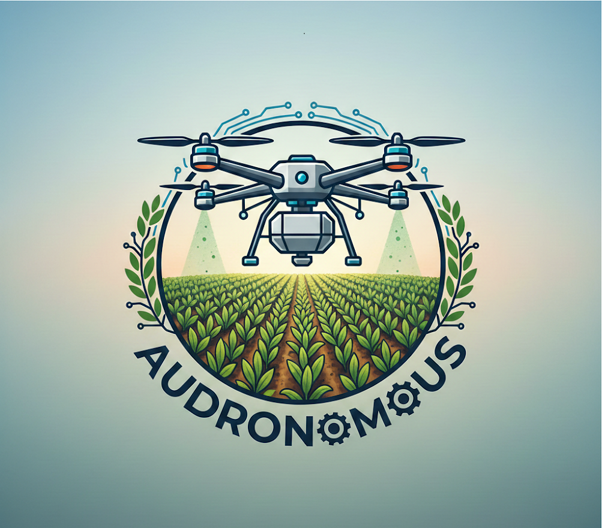
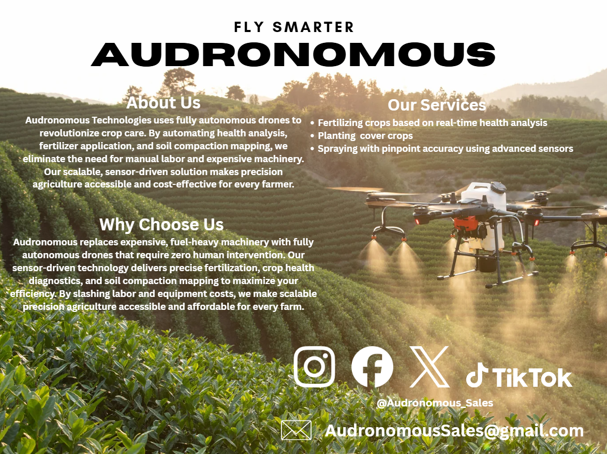

Using autonomous drone technology, we are able to optimize crop treatment. By using drones for agriculture, we reduce the need for physical labor while optimizing agricultural practice.
Audronomous Technologies is revolutionizing the agricultural industry by introducing fully autonomous drones designed to reduce labor, fuel costs, and reliance on expensive machinery. Our drones require no human interaction during operation and are equipped with advanced sensors to analyze crop health and precisely apply fertilizer. This innovation addresses the high cost and labor intensity of farming, offering a scalable solution for both small and large-scale farmers. With a working prototype and plans for live demonstrations, Audronomous is poised to disrupt the farming equipment market and make precision agriculture accessible to all. Adronomous can also measure the soil compaction that a field has.